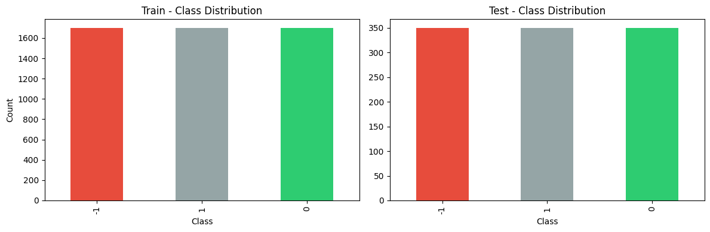
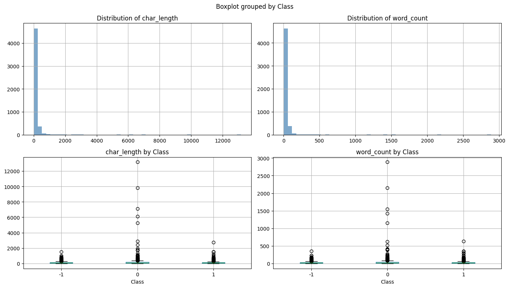
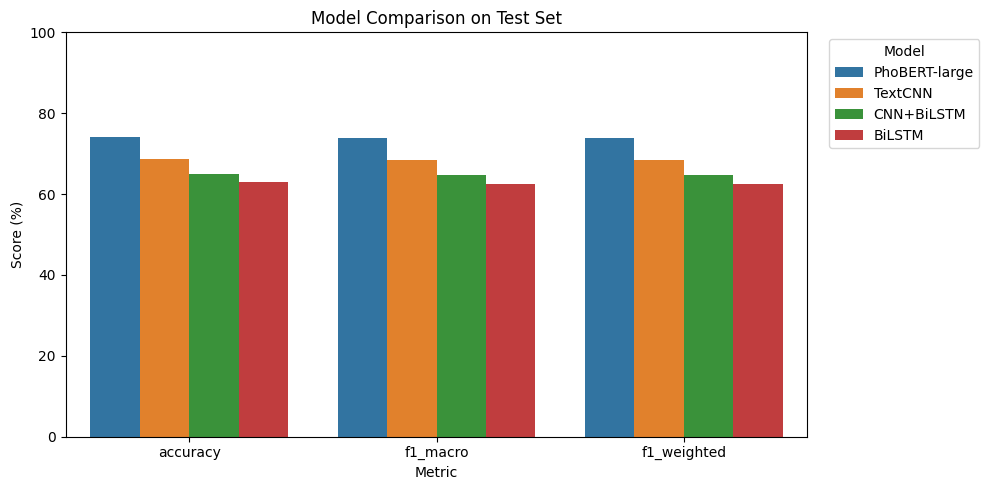

Tài liệu bài tập
Nội dung dựa trên code và outputs đã lưu trong sentimentanalysis.ipynb; chưa chạy lại notebook.
Notebook
Đã có link Kaggle và bản tải xuống có outputs; chưa kiểm chứng lại Run all cùng các input phụ thuộc.
PDF report
Báo cáo riêng của bài tập lớn này
YouTube
Video Public hoặc Unlisted · khuyến nghị 5–10 phút
Mô tả tập dữ liệu
- Bài toán
- Phân loại cảm xúc có giám sát, ba lớp.
- Tập dữ liệu / Nguồn
- VLSP Sentiment Dataset · Kaggle ↗
- Dữ liệu gốc
- 6,150 văn bản: 5,100 tập phát triển + 1,050 test.
- Cột và ngôn ngữ
- Class (nhãn), Data (văn bản tiếng Việt).
- Nhãn gốc → nhãn mô hình
- −1 → 0: tiêu cực; 0 → 1: trung lập; +1 → 2: tích cực.
Notebook đọc hai CSV train/test từ Kaggle, phân tách bằng tab. Outputs ghi nhận không có giá trị thiếu ở Class hoặc Data trong cả hai tập. Version dữ liệu, nguồn thu thập ban đầu và giấy phép chưa được xác nhận trong file; kiểm tra giá trị thiếu không thay thế kiểm tra nhãn sai hay trùng lặp.
Khám phá dữ liệu (EDA)
Tập phát triển gốc có đúng 1,700 mẫu mỗi lớp (33.3%); test có 350 mẫu mỗi lớp. Cân bằng nhãn giúp đọc accuracy cùng macro-F1, nhưng không bảo đảm các cách diễn đạt hoặc chủ đề được phân bố đều.


Train trong hình là 5,100 mẫu gốc, chưa tách validation; test gồm 1,050 mẫu. Mỗi lớp chiếm một phần ba trong cả hai tập.
Độ dài và các trường hợp cần kiểm tra
| Thước đo | Trung bình | Trung vị | Q1 / Q3 | Nhỏ nhất / Lớn nhất |
|---|---|---|---|---|
| Số ký tự | 129.75 | 81 | 45 / 146 | 2 / 13,164 |
| Số đơn vị tách bằng khoảng trắng | 29.35 | 19 | 10 / 33 | 1 / 2,885 |
Độ dài có đuôi rất dài: 106 mẫu phát triển vượt 500 ký tự. Các văn bản ngắn như “Ngon”, “xấu”, “Đẹp” vẫn có tín hiệu cảm xúc nên code giữ lại. word_count dùng str.split(), chưa phải số từ sau tách từ tiếng Việt. Hai cột độ dài được tính trước làm sạch, không tính lại và không làm đầu vào mô hình.


Hình dùng 5,100 mẫu phát triển trước làm sạch. Giá trị cực đại lớn hơn nhiều trung vị; ngưỡng đầu vào 300 từ đã biết và 256 token của hai nhánh là các đơn vị khác nhau, không suy ra tỷ lệ bị cắt trực tiếp từ histogram này.
Từ vựng và cách viết
EDA bằng lower().split() đếm 149,705 đơn vị và 12,638 dạng khác nhau. “không” xuất hiện 1,523 lần, “ko” 804 lần; đây là bằng chứng cho nhu cầu chuẩn hóa cách viết và giữ phủ định. Trong lớp tích cực có các từ thường gặp như “quá”, “rất”, “đẹp”; tần suất đơn lẻ không chứng minh một từ quyết định nhãn hay quan trọng đối với mô hình.
| Quan sát | Bằng chứng | Xử lý / Giới hạn |
|---|---|---|
| Ba lớp cân bằng | 1,700/lớp ở tập phát triển; 350/lớp ở test. | Dùng cross-entropy thường và báo cáo macro-F1; chưa có trọng số lớp. |
| Văn bản rất ngắn và rất dài | Trung vị 81 ký tự; lớn nhất 13,164. | Giữ mẫu ngắn; pad/cắt chuỗi cho mô hình. Chưa báo cáo tỷ lệ bị cắt. |
| Nhiều cách viết phủ định | “không”: 1,523; “ko”: 804 lần. | Chuẩn hóa teencode; không chạy phần xóa stopword đã comment. |
| Không thiếu dữ liệu | Class và Data: 0 giá trị thiếu ở hai tập. | Không loại dòng vì thiếu dữ liệu; chưa có audit trùng lặp hoặc xung đột nhãn. |
Chuẩn bị dữ liệu
Làm sạch văn bản gốc
- Đưa về chữ thường và chuẩn Unicode NFC, áp dụng cho cả train/test gốc.
- Đổi emoticon thành từ trước khi lọc ký tự: :) → “cười”, :( → “buồn”, ^^ → “vui”. Chỉ các mẫu trong quy tắc được chuyển; không phải toàn bộ emoji đều được bảo toàn.
- Thay teencode theo từ điển: ko/k/kh → “không”, dc/đc → “được”, sp → “sản phẩm”, dt/đt → “điện thoại”. Quy tắc có thể đổi nghĩa theo ngữ cảnh; ví dụ vl/vcl được đổi thành “vui lắm”/“vui quá”, cần kiểm tra thủ công.
- Lọc ký tự ngoài chữ/số/dấu gạch dưới, khoảng trắng và dấu câu , . ? !; thu gọn khoảng trắng. Giữ dấu tiếng Việt và phủ định. Phần xóa stopword chỉ là code đã comment, không được thực thi.
Sau làm sạch vẫn có 5,100 mẫu phát triển và 1,050 test; không có bước loại bản sao được ghi nhận. CSV làm sạch còn được dùng làm input ngoài cho nhánh PhoBERT, nhưng notebook không lưu danh sách ID để đối chiếu từng mẫu test giữa hai nhánh.
Hai nhánh biểu diễn đầu vào
| Bước | Word2Vec → TextCNN / BiLSTM / CNN+BiLSTM | PhoBERT-large |
|---|---|---|
| Dữ liệu phát triển | 5,100 mẫu đã làm sạch trong notebook. | CSV augmented_v2 có 10,149 mẫu. Markdown mô tả dịch vòng Việt → Anh → Việt bằng notebook khác; code tạo dữ liệu không đi kèm. |
| Tách từ / Từ vựng | Xóa chữ số ASCII; PyVi tách từ. Tạo từ vựng theo tần suất từ toàn bộ 5,100 mẫu trước chia validation. | AutoTokenizer của vinai/phobert-large. Nhánh này không thể hiện bước tách từ trước tokenizer; cần xác nhận input CSV. |
| Độ dài / Từ chưa biết | Tối đa 300 từ trong từ vựng: giữ 300 từ đầu nếu dài; thêm 0 ở đầu nếu ngắn. Từ ngoài từ vựng bị bỏ, không có UNK. | padding="max_length", truncation=True, max_length=256. Token subword khác đơn vị từ của PyVi. |
| Biểu diễn | vi-model-CBOW.bin, embedding 400 chiều; ma trận (7,888, 400), gồm hàng padding 0 và 7,887 từ. Từ không có vector pretrained khởi tạo ngẫu nhiên; chưa báo cáo tỷ lệ bao phủ. | input_ids và attention_mask cho phân loại ba nhãn; fine-tune toàn bộ mô hình pretrained. |
Hướng dẫn chính thức của PhoBERT yêu cầu văn bản đã tách từ. Code trong nhánh PhoBERT đọc trực tiếp CSV rồi tokenize, nên chưa thể khẳng định yêu cầu này đã được đáp ứng ở bước chuẩn bị file ngoài.
Hướng dẫn đầu vào của PhoBERT ↗
Chia tập và vai trò validation/test
| Nhánh | Train | Validation | Test | Cách chia |
|---|---|---|---|---|
| Word2Vec | 4,080 | 1,020 | 1,050 | 20% validation bằng random_split; không đặt seed/generator và không stratify trong lời gọi. |
| PhoBERT-large | 9,134 | 1,015 | 1,050 | 10% validation từ 10,149 mẫu sau tăng cường, stratify theo nhãn, seed 42. |
Các số train/validation trong bảng được tính từ code, không phải bảng đếm theo lớp đã in. Train cập nhật trọng số; validation theo dõi loss hoặc chọn checkpoint; test báo cáo kết quả cuối. Hai nhánh có lượng dữ liệu và validation khác nhau nên không phải so sánh chỉ thay kiến trúc.
Từ vựng Word2Vec được fit trước khi chia validation, nên đã thấy phân bố từ của validation (không fit trên test). PhoBERT chia sau tăng cường và không nhóm theo văn bản gốc: bản gốc và bản dịch có thể lọt vào hai split khác nhau. Notebook chưa kiểm tra trùng/ảnh hưởng này; đây là rủi ro từ code, chưa phải số trường hợp rò rỉ đã xác nhận.
Phân tích và mô hình hóa
Kiến trúc và cách huấn luyện
| Mô hình | Các lớp chính |
|---|---|
| TextCNN | Embedding được học tiếp → Conv1d kernel 3/4/5, mỗi nhánh 100 filters → ReLU + max pooling → dropout 0.5 → Linear 3 lớp. |
| BiLSTM | Notebook gọi “LSTM” nhưng code là hai chiều: hidden 64 mỗi chiều → mean pooling theo chuỗi → Linear 3 lớp. |
| CNN+BiLSTM | Embedding được học tiếp → Conv1d 128 filters, kernel 3 + ReLU → BiLSTM hidden 64 mỗi chiều → mean pooling → dropout 0.5 → Linear 3 lớp. |
| PhoBERT-large | AutoModelForSequenceClassification với num_labels=3; không khóa backbone. |
Ba mô hình Word2Vec dùng CrossEntropyLoss, Adam (LR 1e-3, weight decay 1e-5), batch 256 và gradient clipping norm 1. Tối đa 15 epoch, early stopping patience 4 theo validation loss với mức cải thiện > 0.01. TextCNN dừng ở epoch 8; BiLSTM và CNN+BiLSTM chạy đủ 15. Code không lưu/khôi phục trọng số tốt nhất, nên kết quả dùng trạng thái cuối của mô hình.
PhoBERT dùng LR 1.5e-5, weight decay 0.01, warmup 10%, cosine scheduler, FP16 và 6 epoch. Batch train 8 mỗi thiết bị × tích lũy gradient 4 (32 mẫu mỗi thiết bị cho bước đủ tích lũy); batch đánh giá 16. Eval/save mỗi epoch, chọn theo validation macro-F1, load_best_model_at_end=True và patience 2; outputs ghi đủ 6 epoch.
Ở epoch cuối TextCNN, train accuracy là 93.85% và validation accuracy 64.51%, cho thấy khoảng cách lớn trong lần chạy này. PhoBERT tăng validation macro-F1 từ 0.6783 (epoch 1) lên 0.7927 (epoch 6). Khi tải lại checkpoint, log cảnh báo thiếu các khóa LayerNorm.weight/bias và thừa LayerNorm.gamma/beta; cần kiểm chứng việc khôi phục trước khi coi checkpoint đã tái lập đầy đủ.
Kết quả test đã lưu
Accuracy là tỷ lệ dự đoán đúng; precision và recall phản ánh độ chính xác của dự đoán theo lớp và mức thu hồi mẫu thật. Macro-F1 lấy trung bình F1 của ba lớp, cho mỗi lớp trọng số ngang nhau. Bảng dùng số chính xác từ output tổng hợp, làm tròn accuracy/precision/recall theo % và F1 đến bốn chữ số.
| Mô hình | Accuracy | Precision (macro) | Recall (macro) | F1 (macro) |
|---|---|---|---|---|
| PhoBERT-large | 74.00% | 73.78% | 74.00% | 0.7382 |
| TextCNN | 68.57% | 69.36% | 68.57% | 0.6844 |
| CNN+BiLSTM | 65.05% | 66.88% | 65.05% | 0.6468 |
| BiLSTM | 62.86% | 62.78% | 62.86% | 0.6256 |
PhoBERT-large cao nhất trong outputs: accuracy 74.00%, macro-F1 0.7382. So với TextCNN (68.57%, 0.6844), chênh lệch là 5.43 điểm phần trăm accuracy và khoảng 0.0538 macro-F1. Mỗi lớp test có 350 mẫu nên các metric weighted bằng macro trong bảng tổng hợp. Khác biệt recipe và dữ liệu không cho phép quy toàn bộ chênh lệch cho kiến trúc.


Hình giữ nguyên output notebook; các metric được hiển thị theo %. Bảng phía trên ghi macro-F1 theo thang 0–1. Đây là kết quả một lần chạy với hai pipeline dữ liệu khác nhau.
PhoBERT: lớp trung lập khó nhất
| Lớp | Precision | Recall | F1 | Số mẫu |
|---|---|---|---|---|
| Tiêu cực | 0.75 | 0.77 | 0.76 | 350 |
| Trung lập | 0.69 | 0.63 | 0.66 | 350 |
| Tích cực | 0.78 | 0.82 | 0.80 | 350 |
Lớp trung lập có recall 0.63 và F1 0.66, thấp hơn hai lớp còn lại; lớp tích cực có F1 0.80. Đây là điểm cần ưu tiên kiểm tra lỗi. Notebook chưa lưu confusion matrix hoặc danh sách câu dự đoán sai, nên chưa xác định được trung lập bị nhầm chủ yếu sang lớp nào hay do hiện tượng ngôn ngữ cụ thể nào.
Tổng kết và mở rộng
Kết quả đã lưu ủng hộ PhoBERT-large là mô hình tốt nhất trong bốn cấu hình đã chạy; TextCNN đứng đầu nhóm Word2Vec. Kết luận này giới hạn ở các input, cách chia tập và trạng thái mô hình trong notebook, chưa phải bằng chứng về ưu thế khi kiểm soát cùng dữ liệu và ngân sách huấn luyện.
Giới hạn cần nêu trong báo cáo
- So sánh chưa kiểm soát: PhoBERT có tăng cường dữ liệu và validation khác; không có manifest xác nhận cùng từng mẫu test, audit trùng lặp, hoặc grouping bản dịch theo văn bản gốc.
- Chọn mô hình chưa đồng nhất: Word2Vec không khôi phục checkpoint tốt nhất; PhoBERT có cảnh báo khi reload. Cần xác nhận trọng số và dự đoán sau tải lại.
- Ba mô hình Word2Vec nhận cùng embedding_tensor, được học tiếp và không clone khi khởi tạo. Theo cách from_pretrained xử lý tensor, có nguy cơ chia sẻ bộ nhớ và ảnh hưởng giữa các lần huấn luyện nối tiếp; đây là suy luận từ code, chưa được kiểm tra lại ở runtime.
- Không đặt padding_idx cho embedding; hai nhánh BiLSTM lấy mean pooling gồm cả vị trí padding, chưa có mask. Từ OOV bị bỏ; chưa báo cáo tỷ lệ OOV, chuỗi rỗng hay lượng thông tin bị cắt.
- Chỉ có outputs một lần chạy; nhánh Word2Vec không đặt seed cho random_split. Chưa có độ lệch giữa nhiều seed, thời gian/chi phí so sánh đầy đủ hoặc kiểm chứng Run all độc lập.
Mã nguồn PyTorch: Embedding.from_pretrained ↗
Hướng kiểm chứng tiếp theo (chưa thực hiện)
Chốt manifest và chia tập gốc trước khi fit từ vựng hoặc tăng cường; chỉ tạo bản dịch cho train. Dùng chung validation/test cho các mô hình, tách bản sao embedding, mask padding, xác nhận tách từ PhoBERT và sửa việc tải checkpoint. Sau đó chạy nhiều seed và lưu confusion matrix/câu sai, ưu tiên lớp trung lập và các câu có phủ định. Đây là đề xuất, không phải kết quả mới.